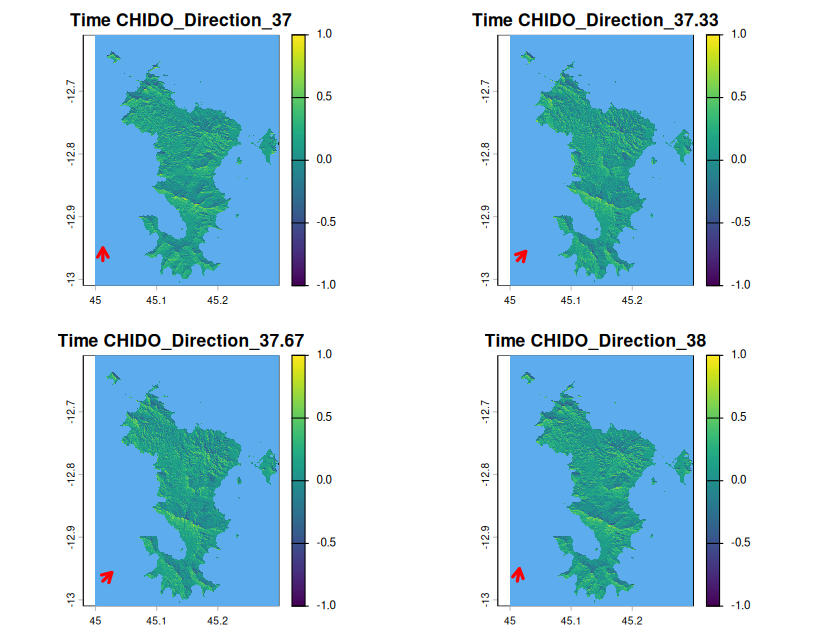
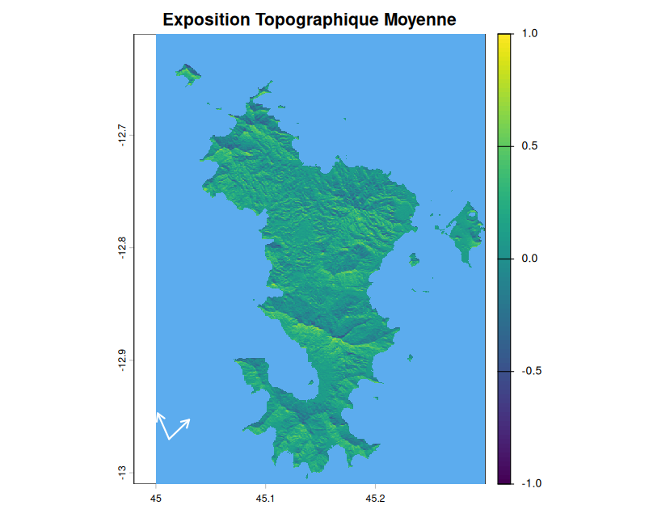

Le principe de la fonction qui permet de calculer l’exposition topographique au vent est expliqué en détails dans l’onglet “Exposition Topographique” avec l’explication des outputs
En testant tous les produits possibles sans seuil de vent, on obtient pour Chido, 26 layers sont calculés.
La visualisation de cette fonction se base sur le même principe que pltoBehaviour où on peut visualiser un layer. Ici il y a la flèche correspondant à la direction du vent lorsque l’on visualise un profil.

Pour les outputs récapitulatifs c’est-à-dire l’exposition maximale de chaque cellule du raster et l’exposition moyenne de chaque cellule du raster, les flèches correspondent à l’étendue des vents sur tout le long du cyclone.

Lorsque l’on compare avec ou sans seuil de vitesse, ici il n’y a presque pas de différence.